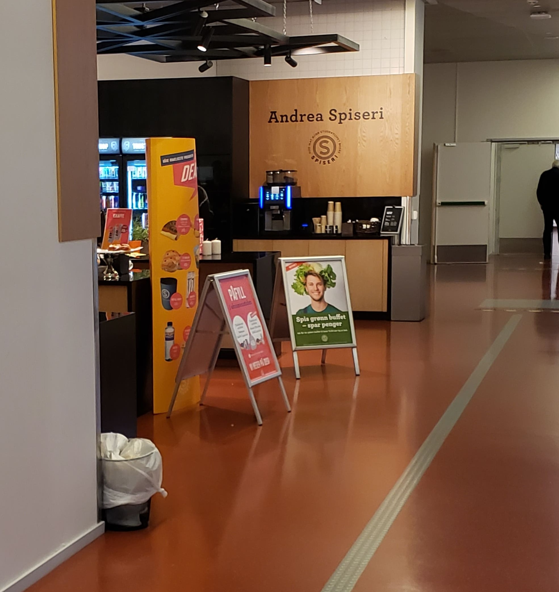
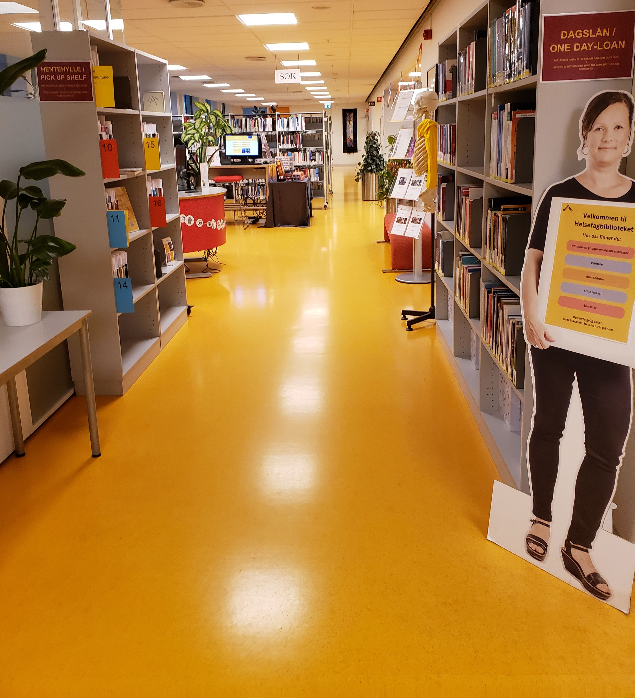

This is the building dedicated to the health students. It has a library with everything within the health literature. It also has a decently sized canteen with lots of fresh food. It has one of the largest auditoriums on the Pilestredet campus.
History of the building
Historically, Pilestredet 32 has witnessed many changes and developments in the city. Over the years, it has served various purposes, including residential, commercial, and cultural functions. Its location in the heart of Oslo makes it a prime spot for businesses and residents alike, providing easy access to the city's amenities and attractions.
Today, Pilestredet 32 continues to be a vibrant and bustling hub within Oslo. The building houses a mix of businesses, shops, and residential units, making it a thriving and diverse community. It's a place where people come together, whether for work, shopping, or simply enjoying the city's vibrant atmosphere.
Pilestredet 32's central location also means that it's well-connected to public transportation, making it easy for residents and visitors to explore all that Oslo has to offer. The surrounding area is teeming with restaurants, cafes, boutiques, and cultural institutions, adding to the appeal of this iconic address.
In summary, Pilestredet 32 is a landmark address in Oslo, cherished for its historical significance, architectural beauty, and its role in the city's ongoing growth and development. It continues to be a place where the past meets the present, offering a glimpse into the city's rich history and a promising future.
Andrea Arntzen
Andrea Arntzen was a pioneering woman in nursing and nursing education in Norway. She attended a course in nursing at Rikshospitalet in the early 1890s. At the time, there were few nursing schools in Norway, and many young women had to travel abroad to receive nursing education. She traveled to Hamburg in 1894 and took her education there. Later, she undertook several study trips abroad. In the spring of 1902, she stayed in England and Scotland, which were considered important pioneer countries because of Florence Nightingale's pioneering work, and in 1929 she traveled on a three-month study trip to Canada and the United States. In addition to these two extensive study trips, she made a number of shorter visits to major European hospitals.
The Canteen
The canteen in Pilestredet 32 is known for providing a welcoming and affordable dining experience. It offers a diverse and delicious menu that caters to a wide range of tastes and dietary preferences. Whether you're in the mood for traditional Norwegian dishes, international cuisine, or vegetarian and vegan options, you'll find something to satisfy your appetite.
This dining facility is not just a place to refuel, but it also serves as a social hub for students and the local community. It's a great spot to meet with friends, study, or simply relax and enjoy a good meal in a friendly and welcoming environment.
SIO's canteen in Pilestredet 32 plays a vital role in the overall student experience at OsloMet (Oslo Metropolitan University) and the broader community. It provides convenient and affordable dining options, fostering a sense of community and ensuring that students and visitors have access to nutritious and delicious food while on campus.

The Library
The Health Library is typically equipped with an extensive collection of books, journals, research papers, and electronic databases, all of which cover a diverse array of topics within the health and medical disciplines. It's a go-to place for students and researchers seeking the latest information on medical advancements, healthcare policies, patient care, and other crucial health-related subjects.
Moreover, the Health Library at Pilestredet 32 may host workshops, seminars, and lectures on topics relevant to health sciences and research, contributing to the university's academic community. It serves as a hub for knowledge exchange and a catalyst for the advancement of healthcare and medical knowledge within the university and the greater Oslo community.

The Auditorium
The big auditorium in Pilestredet 32 is a prominent and vital part of the academic infrastructure at OsloMet (Oslo Metropolitan University). This auditorium is typically a spacious and well-equipped facility designed to accommodate a large number of students and audience members, making it suitable for lectures, presentations, conferences, and various academic and public events.
One of the defining characteristics of the big auditorium is its seating capacity. It can host a significant number of people, often featuring tiered seating to ensure that everyone in the audience has a clear view of the stage or presenter. This feature makes it an ideal space for large gatherings.
Overall, the big auditorium in Pilestredet 32 plays a significant role in enhancing the educational experience. It provides a space for engaging with experts, thought leaders, and peers, fostering academic dialogue and knowledge sharing. Its significance extends not only to students and faculty but also to the broader community, as it often hosts events that are open to the public, making it a central element of the university's academic and cultural environment.